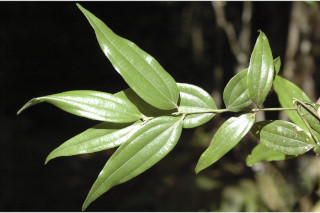
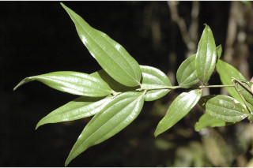

Images :

 

| Habit : | Trees up to 7 m tall. |
| Leaves : | Leaves simple , opposite to subopposite ; petiole to 1 cm long, planoconvex in cross section, glabrous ; lamina 18 x 1.5 cm, linear-lanceolate , apex tapered and acute or slightly acuminate , base acute to rounded , glabrous , chartaceous ; trinerved basal or suprabasal , laterals not reaching leaf apex ; tertiary_nerves horizontally_percurrent ; higher order nerves minutely reticulate . |
| Inflorescence / Flower : | Inflorescence axillary or subterminal panicled cymes , few to more flowered; peduncle slender. |
| Fruit and Seed : | Berry ; seed 1. |